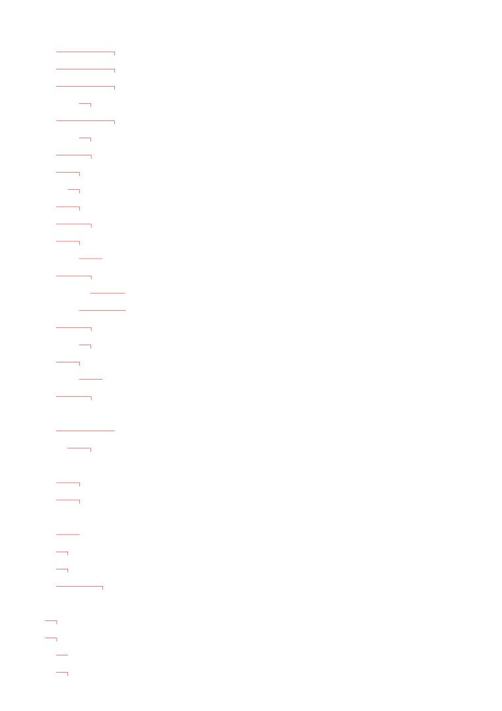
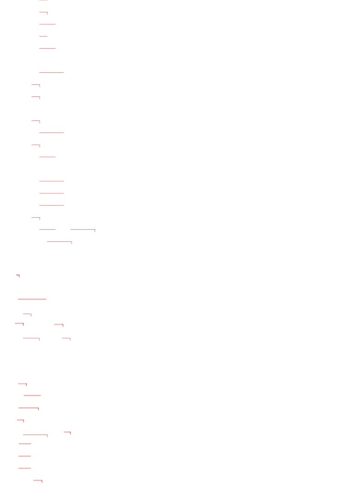
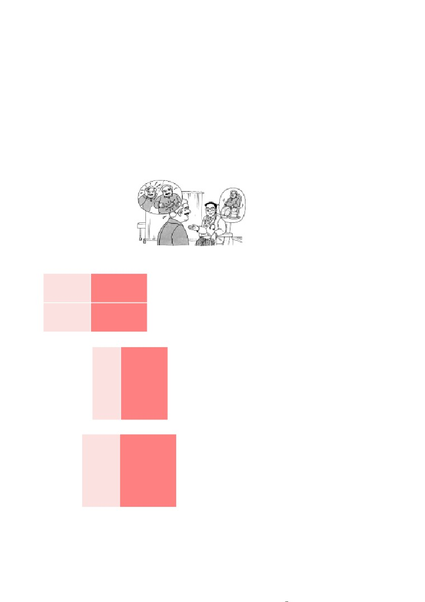
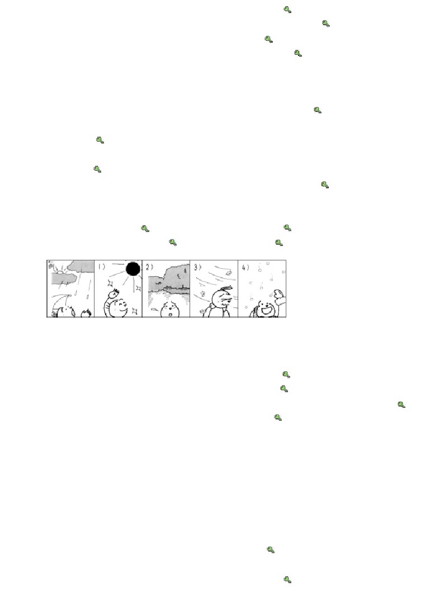
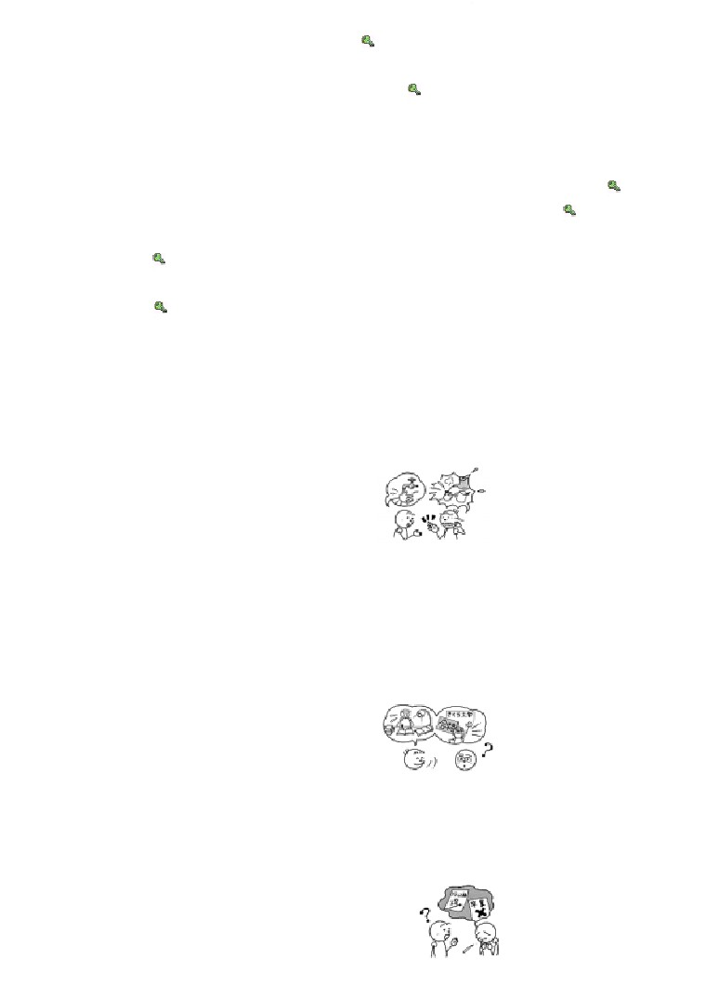
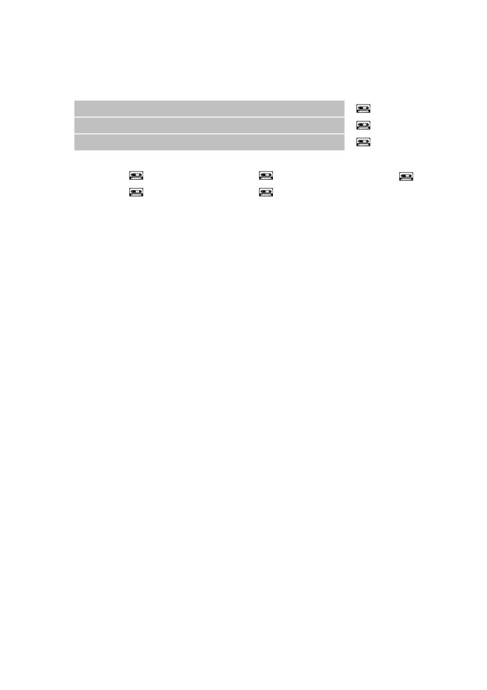
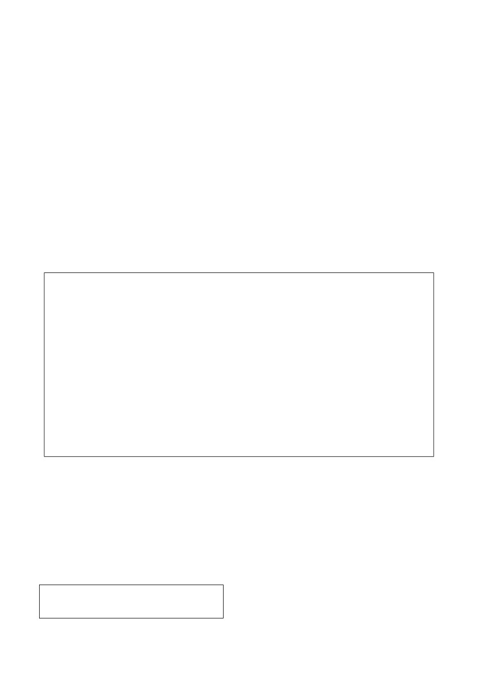
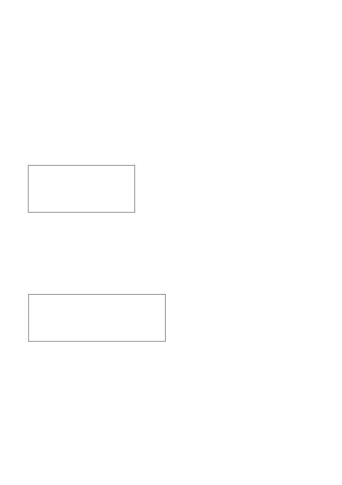

第３２課
課:32 (頁:1/10)
ことば
1.
うんどうします Ⅲ
運動します
運動
2.
せいこうします Ⅲ
成功します
成功
3.
しっぱいします
Ⅲ
失敗します
〔考試
〕失敗
［しけんに～］
［試験に～］
4.
ごうかくします
Ⅲ
合格します
通過〔
考試〕
，合格
［しけんに～］
［試験に～］
5.
もどります Ⅰ
戻ります
返回
6.
やみます
Ⅰ
〔雨〕停了
［あめが～］
［雨が～］
7.
はれます Ⅱ
晴れます
晴朗
8.
くもります Ⅰ
曇ります
陰天
9.
ふきます
Ⅰ
吹きます
颳 風〕
［かぜが～］
［風が～］
10.
なおります
Ⅰ
治ります、直ります
治療， 病〕好了
［びょうきが～］
［病気が～］
排除〔故障〕
［こしょうが～］
［故障が～］
11.
つづきます
Ⅰ
続きます
持續〔
發高燒〕
［ねつが～］
［熱が～］
12.
ひきます
Ⅰ
患〔
感冒〕
［かぜを～］
13.
ひやします Ⅰ
冷やします
冰鎮
14. しんぱい［な］
心配［な］
擔心〔的〕
15. じゅうぶん［な］
十分［な］
足夠〔的〕
16. おかしい
奇怪，可疑
17. うるさい
吵鬧，煩人
18. やけど
燒傷，燙傷（～を します：燒燙傷
19. けが
傷（～を します：受傷）
20. せき
咳嗽（～が でます：咳嗽）
21. インフルエンザ
流行性感冒
22. そら
空
天空
23. たいよう
太陽
太陽
24. ほし
星
星星
25. つき
月
月亮

課:32 (頁:2/10)
26.
かぜ
風
風
27. きた
北
北
28. みなみ
南
南
29. にし
西
西
30. ひがし
東
東
31. すいどう
水道
水道，水管
32. エンジン
引擎
33. チーム
隊
34. こんや
今夜
今天晚上
35. ゆうがた
夕方
傍晚
36. まえ
以前，前面
37. おそく
遅く
晚（時間）
38. こんなに
這麼
39. そんなに
那麼（與聽話人有關的事）
40. あんなに
那麼（與說話人、聽話人都無關的）
41. もしかしたら
如果，萬一
42. それは いけませんね。
那可不行啊！
43.
※オリンピツク
奧林匹克運動會
かい わ
会話
げん き
元気
健康，精神煥發
い
胃
胃
はたら
働きすぎ
工作過度
ストレス
疲勞，緊張
む り
無理を します Ⅲ
勉強
ゆっくり します Ⅲ
好好休息，慢慢做
よ
もの
…読み物……………………………………………………………………………………………
ほし うらな
星占い
占星術，星相
お うし ざ
牡牛座
牡牛座
こま
困ります Ⅰ
麻煩了，糟了
たから
宝くじ
彩券
あ
たから
当たります［宝くじが～］Ⅰ
中〔彩券〕
けん こう
健康
健康
れん あい
恋愛
戀愛
こい びと
恋人
戀人
かね も
［お］金持ち
有錢人﹐財主
:32 (頁:3/10)
ぶん けい
文型
まい にち
うん どう
1. 毎日 運動した ほうが いいです。
ゆき
ふ
2. あしたは 雪が 降るでしょう。
やく そく
じ かん
ま
あ
3. 約束の 時間に 間に 合わないかも しれません。
れい ぶん
例文
さい きん
がく せい
あそ
1. 最近の 学生は よく 遊びますね。
わか
けい けん
…そうですね。 でも、若い ときは、いろいろな 経験を した
おも
ほうが いいと 思います。
げつ
あそ
い
まん えん
2.
1か月ぐらい ヨーロツパヘ 遊びに 行きたいんですが、40万円で
た
足りますか。
じゅう ぶん
おも
…十分だと 思います。
げん きん
も
い
でも、現金で 持って 行かない ほうが いいですよ。
に ほん
けい ざい
3.
日本の 経済は どう なるでしょうか。
…そうですね。 まだ しばらく よく ならないでしょう。
せい こう
オリンピックは 成功するでしょうか。
4.
だい じょう ぶ
…大丈夫でしょう。
じゅん び
ずいぶん まえから 準備して いますから。
せん せい
なん
びょう き
5.
先生、ハンスは 何の 病気でしょうか。
みっ か
たか
ねつ
つづ
…インフルエンザですね。 3日ほど 高い 熱が 続くかも
しん ぱい
しれませんが、心配しないで ください。
おと
おも
6. エンジンの 音が おかしいと 思いませんか。
こ しょう
…ええ。 故障かも しれません。
くう こう
もど
すぐ 空港に 戻りましょう。
かい わ
会話
びょう き
病気かも しれません
わた
なべ
げん き
渡 辺
：
シュミットさん、どう したんですか。 元気が
ありませんね。
さい きん からだ
ちょう し
シュミット： 最近 体の 調子が よくないんです。
とき どき あたま
い
いた
時々 頭や 胃が 痛く なるんです。
わた
なべ
びょう き
渡 辺
：
それは いけませんね。 病気かも しれませんから、
いち ど
びょう いん
み
一度 病院で 診て もらった ほうが いいですよ。

課:32 (頁:4/10)
シュミット： ええ、そうですね。
----------------------------
せん せい
わる
シュミット： 先生、どこが 悪いんですか。
い
しゃ
とく
わる
医 者
：
特に 悪い ところは ありませんよ。
し ごと
いそが
仕事は 忙しいですか。
さい きん
ざんぎょう
おお
シュミット： ええ。 最近 残業が 多いんです。
い
しゃ
はたら
し ごと
医 者
：
働きすぎですね。 仕事の ストレスでしょう。
シュミット： そうですか。
い
しゃ
む り
医 者
：
無理を しない ほうが いいですよ。
すこ
やす
と
少し 休みを 取って、ゆっくり して ください。
シュミット： はい、わかりました。
れん しゅう
練習 Ａ
びょう いん
1.
病院へ
いった
ほうが いいです。
くすり
薬を
のんだ
たばこを
すわない
おふろに
はいらない
こん や
ほし
2.
今夜は
星が
みえる
でしょう。
ゆき
雪は
ふらない
さむい
つき
月が
きれい
あめ
かれ
かい しゃ
3.
彼は
会社を
やめる
かも しれません。
こない
あした
いそがしい
らい しゅう
来週
ひま
びょうき
れん しゅう
練習 Ｂ
れい
からだ
わる
1. 例1： 体に 悪いです・たばこを やめます
からだ
わる
→ 体に 悪いですから、たばこを やめた ほうが いいです。
れい
ねつ
はい
例2： 熱が あります・おふろに 入りません
ねつ
はい
→ 熱が ありますから、おふろに 入らない ほうが いいです。

ぎゅうにゅう
からだ
まい にち
の
課:32 (頁:5/10)
1)
牛乳は 体に いいです・毎日 飲みます →
なつ やす
こ
はや
よ やく
2)
夏休みは ホテルが 込みます・早く 予約します →
おそ
でん わ
3)
もう 遅いです・電話は かけません →
あぶ
よる
おそ
ひとり
ある
4)
危ないです・夜 遅く 一人で 歩きません →
れい
で
びょう いん
い
2.
例： きのうから せきが 出るんです。（ 病院へ 行きます ）
びょう いん
い
→ じゃ、病院へ 行った ほうが いいですよ。
つぎ
でん しゃ
の
いそ
1)
次の 電車に 乗りたいんです。（ 急ぎます ） →
となり
いぬ
となり
ひと
ちょくせつ
い
2)
隣の うちの 犬が うるさいんです。（ 隣の 人に
直接 言います ）
→
い
ちょう し
わる
さけ
の
3)
ちょっと 胃の 調子が 悪いんです。（ きょうは お酒を 飲みません ）
→
で
4)
かぜを ひいて いるんです。（ 出かけません ） →
れい
ゆう がた
ゆう がた
あめ
3.
例： 夕方には →
夕方には 雨が やむでしょう。
ご ご
1)
あしたは →
2)
午後は →
あさ
よる
3)
あしたの 朝は →
4)
夜は →
れい
にし
そら
あか
てん き
4. 例： 西の 空が 赤いです・あしたは いい 天気に なります
にし
そら
あか
てん き
→ 西の 空が 赤いですから、あしたは いい 天気に なるでしょう。
やす
なお
1)
かぜです・ゆっくり 休んだら、治ります →
てん き
わる
ふ じ さん
み
2)
天気が 悪いです・富士山は 見えません →
えき
まえ
まち
3)
駅の 前に デパートが できました・町は にぎやかに なります →
ご ご
かい ぎ
ぶ ちょう
いそが
4)
午後は 会議です・部長は 忙しいです →
れい
えき
ぶん
い
みち
5.
例1： 駅まで 30分で 行けますか。（ ええ、きょうは 道が すいて います ）
みち
→
ええ、きょうは 道が すいて いますから、たぶん
い
行けるでしょう。
れい
ね だん
すこ
ま
やす
例2： この パソコンの 値段は もう 少し 待ったら、安く なりますか。
あたら
せい ひん
（ いいえ、新しい 製品です ）
あたら
せい ひん
やす
→ いいえ、新しい 製品ですから、たぶん 安く ならないでしょう。
かの じょ
みち
1)
彼女は 道が わかりますか。
ち ず
も
（ ええ、地図を 持って います ） →
まん えん
か
2)
3万円で ビデオが 買えますか。
さい きん
やす
（ ええ、最近 安く なって います ） →

かれ
き
課:32 (頁:6/10)
3)
彼は パーティーに 来ますか。
いそが
（ いいえ、忙しいです ） →
やま だ
はなし
し
4)
山田さんは その 話を 知って いますか。
せんしゅう しゅっちょう
（ いいえ、先週 出張でした ） →
れい
でん わ
やく そく
じ かん
ま
あ
6. 例： 電話を かけるんですか。（ 約束の 時間に 間に 合いません ）
やく そく
じ かん
ま
あ
→ ええ。 約束の 時間に 間に 合わないかも しれませんから。
も
い
よる
さむ
1)
コートを 持って 行くんですか。（ 夜 寒く なります ） →
くるま
い
ちゅうしゃ じょう
2)
車で 行かないんですか。（ 駐車場が ありません ） →
りょ こう
くすり
の
き ぶん
わる
3)
バス旅行の ときは 薬を 飲むんですか。（ 気分が 悪く なります ）
→
よ やく
あさ
4)
タクシーを 予約して おくんですか。（ 朝は タクシーが ありません ）
→
れんしゅう
練習 Ｃ
1. Ａ: どう したんですか。
Ｂ: やけどを したんです。
すい どう
みず
ひ
Ａ: じや、 すぐ 水道の 水で 冷やした ほうが いいですよ。
Ｂ: ええ、そう します。
ねつ
1)
熱が あります
かえ
やす
うちへ 帰って、休みます
あたま
いた
2)
頭が 痛いです
くすり
の
薬を 飲みます
にゅうがく し けん
2. Ａ: もうすぐ 入学試験ですね。
ごう かく
Ｂ: ええ。 タワポンさんは 合格するでしょうか。
べんきょう
Ａ: よく 勉強して いましたから、
ごう かく
きっと 合格するでしょう。
し あい
1)
サッカーの 試合
か
IMCの チームは 勝ちます
れんしゅう
あんなに 練習します
こく さい
かい ぎ
2)
国際ボランティア会議
かい ぎ
せい こう
会議は 成功します
がん ば
みんな 頑張ります
なに
しん ぱい
3. Ａ: 何か 心配な ことが あるんですか。
がつ
Ｂ: ええ。 もしかしたら 3月に
そつぎょう
卒業できないかも しれません。
Ａ: どうしてですか？
ご
し けん
わる
Ｂ: フランス語の 試験が 悪かったんです。
Ａ: それは いけませんね。

りょ こう
い
課:32 (頁:7/10)
1)
いっしょに 旅行に 行けません
パスポートを なくして しまいました
し あい
ま
2)
あしたの 試合は 負けます
とも だち
あし
チームの 友達が 足に けがを しました
もん だい
問題
れい
おも
1.
1)
…例： あったほうがいいと思います。
れい
くすり
の
2)
…例： いいえ、かぜの薬は飲まないほうがいいです。
れい
おお
3)
…例： 多くなるでしょう。
2.
1)
( ○ )
2)
( × )
3)
( × )
4)
( ○ )
5)
( ○ )
れい
あたま
いた
3.
例1： ちょっと 頭が 痛いんです。
やす
…じゃ、ゆっくり （ 休んだ ） ほうが いいですよ。
れい
いた
例2： おとといから のどが 痛いんです。
おお
こえ
はな
…じゃ、大きい 声で （ 話さない ） ほうが いいですよ。
ねつ
1)
きのうから 熱が あるんです。
む り
…じゃ、あまり 無理を （ しない ） ほうが いいですよ。
れんきゅう
きゅうしゅう
い
2)
連休に 九州へ 行きたいんですが……。
はや
よ やく
…じゃ、早く ホテルを （ 予約した ） ほうが いいですよ。
ちょう し
3)
おなかの 調子が よくないんです。
つめ
もの
た
の
…じゃ、冷たい 物は （ 食べない （ 飲まない ） ） ほうが いいですよ。
だい がく
にゅう がく し けん
4)
あした 大学の 入学試験なんです。
こん ばん
はや
ね
…じゃ、今晩は 早く （ 寝た ） ほうが いいですよ。
れい
じゅう どう
れん しゅう
き
4. 例： ミラーさんは 柔道の 練習に 来ますか。
く
ざん ぎょう
ひ
…ええ、（ 来る ）でしょう。きょうは 残業が ない 日ですから。
やま だ
ちゅう ごく ご
はな
1)
山田さんは 中国語が 話せますか。
はな
ちゅう ごく
ねん
す
…ええ、（ 話せる ）でしょう。中国に ３年 住んで いましたから。
ご ご
や きゅう
し あい
む り
2)
午後の 野球の 試合は 無理でしょうか。
む り
あめ
つよ
…ええ、（ 無理 ）でしょう。こんなに 雨が 強いですから。
から
3)
この カレーは 辛いですか。
から
ちい
こ
た
…いいえ、（ 辛くない ）でしょう。小さい 子どもも 食べて
いますから。
ぶ ちょう
ど よう び
4)
部長は 土曜日 ゴルフですか。
か ぞく
…いいえ、きっと （ ゴルフじゃない （ ゴルフではない ） ）でしょう。家族
い
言いましたから。
れい
こん ど
にち よう び
あめ
あめ
5.
例： 今度の 日曜日は （ 雨です→ 雨 ）かも しれません。
じ はん
でん しゃ
ま
あ
ま
あ
1)
７時半の 電車に （ 間に 合いません→ 間に合わない ）かも

はし
課:32 (頁:8/10)
しれませんから、走りましょう。
くも
ふ じ さん
2)
きょうは 曇って いますから、富士山が
み
み
（ 見えません→ 見えない ）かも しれません。
たか はし
けい けん
すく
し ごと
すこ
3)
高橋さんは まだ 経験が 少ないですから、この 仕事は 少し
むずか
むずか
（ 難しいです→ 難しい ）かも しれません。
らい しゅう
りょ こう
でん しゃ
い
に もつ
おお
4)
来週の 旅行は 電車で 行きますから、荷物が 多いと、
たい へん
たい へん
（ 大変です→ 大変 ）かも しれません。
れい
あめ
あめ
あめ
6.
例： あしたは たぶん （ ①雨 、②雨だ、③雨の ）でしょう。（①）
おも
1)
ミラーさんは とても （ ①まじめ、②まじめだ、③まじめです ）と 思います
さむ
2)
これから だんだん 寒く （ ①なる、②なった、③なって ）でしょう。（①）
た なか
かい ぎ しつ
かい ぎ しつ
かい ぎ しつ
3)
田中さんは （ ①会議室、②会議室だ、③会議室で ）かも しれません。（①）
ざんぎょう
ざんぎょう
4)
きょうは （ ①残業しなければ なりません、②残業しなければ ならない、③
ざんぎょう
残業しなければ ならなくて ）かも しれません。（②）
こん げつ
ほしうらな
7.
今月の 星占い
お うし ざ
がつ
にち
がつ にち
牡牛座 （ 4月21日 － 5月21日 ）
し ごと
なに
あたら
し ごと
はじ
せい こう
☆仕事……何か 新しい 仕事を 始めると、成功するでしょう。
はたら
き
でも、働きすぎには 気を つけた ほうが いいでしょう。
かね
こん げつ
かね
つか
こま
☆お金……今月は いくら お金を 使っても、困らないでしょう。
たから
か
あ
宝くじを 買うと、当たるかも しれません。
けん こう
ひがし
ほう
りょ こう
げん き
☆健康……東の 方へ 旅行したり、スポーツを したり すると、元気に
あし
き
なります。 でも、足の けがには 気を つけて ください。
れん あい
ひとり
てん らん かい
で
☆恋愛……一人で コンサートや 展覧会に 出かけると、いいでしょう。
あ
ひと
しょうらい
こい びと
その とき 会った 人が 将来の 恋人に なるかも
しれません。
あたら
し ごと
はじ
1)
（ ○ ）新しい 仕事を 始めると、いいです。
たから
か
かね も
2)
（ ○ ）宝くじを 買うと、お金持ちに なるかも しれません。
あし
3)
（ × ）スポーツを すると、足に けがを して しまいますから、
スポーツを しない ほうが いいでしょう。
こい びと
てん らん かい
い
4)
（ × ）恋人と コンサートや 展覧会に 行った ほうが いいです。
文法
１
動詞
た
形
ほうが いいです
}
動詞 形ない
まい にち うん どう
①毎日 運動した ほうが いいです。
最好每天運動。

ねつ
課:32 (頁:9/10)
②熱が あるんです。
はい
…じゃ、おふろに 入らない ほうが いいですよ。
發燒了。
…那最好不要洗澡。
這個句型用於提供建議和忠告時，由於有些情況會給人一種強加於人的印象，因
此有視情況使用的必要。
〔註〕「～た ほうが いい」和「～たら いい」的區別
に ほん
てら
み
③日本の お 寺が 見たいんですが……。
きょう と
い
…じゃ、 京都へ 行ったら いいですよ。
我想看看日本的佛寺。
…那你可以去京都。
例句③
（非選擇性）是一般提供建議的情況，這種情況要用「～たら いい
」。
而句型「～た ほうが いい
」雖然沒說出來，也有二者比較選擇的意思。
２
動詞
普通形
}
い形容詞
でしょう
な
形容詞 普通形
}
}
名詞
～だ
這個句型使用於說話人對於某事，以自己擁有的訊息為根據進行推測時。此外像
例句⑤
般用於疑問句時，就會成為詢問聽話人推測的問句了。
あめ
ふ
④あしたは 雨が 降るでしょう。
明天會下雨吧。
ごう かく
⑤タワポンさんは 合格するでしょうか。
瓦朋先生會通過考試吧。
３
動詞
普通形
}
い形容詞
かも しれません
な
形容詞 普通形
}
}
名詞
～だ
「～かも しれません
」也表示說話人的推測語氣，表示某件事情或狀況有發生
了或發生（現在、未來）的可能性，但是比起「～でしょう
」的確定性要低得多。
やく そく
じ かん
ま
あ
⑥約束の 時間に 間に 合わないかも しれません。
或許趕不上約定的時間。
４ . きっと／たぶん／もしかしたら
1) きっと
這個副詞在說話人對自己的推測有信心時使用，它的使用範圍是從確信度高接近
於斷定的推測，到「～でしょう
」程度的推測。
き
⑦ミラーさんは きっと 来ます。
米勒先生一定會來。
あめ
⑧あしたは きっと 雨でしょう。
明天一定會下雨吧。
2) たぶん
課:32 (頁:10/10)
きっと
比「
」確信度低的推測，常與「～でしょう
」一起使用。此外，像例句⑩
一樣，也常與「～と おもいます
」（第21
課）一起使用。
く
⑨ミラーさんは 来るでしょうか。
米勒先生會來吧。
く
…たぶん 来るでしょう。
…大概會來吧。
やま だ
し
おも
⑩山田さんは この ニュースを たぶん 知らないと 思います。
我想山田可能不知道這個消息。
3) もしかしたら
一般和「～かも しれません
」一起用。帶有「もし かしたら
」的句子比不帶
的句子（例句⑪
中的“不能畢業”），可以表示說話人所推測的可能性較低。
がつ
そつ ぎょう
⑪もしかしたら ３ 月に 卒業できないかも しれません。
搞不好
３
月畢不了業。
なに
しん ぱい
５
. 何か 心配な こと
なに
しん ぱい
⑫何か 心配な ことが あるんですか。
你是有什麼擔心的事嗎？
像⑫之類的句子，不能說「しんぱいな なにか」，只能說「なにか しんぱい
な こと」。其他還有「なにか ～ もの」「どこか ～ ところ」「だれか ～
ひと」 「 いつか ～ とき」等。
い
ところ
⑬スキーに 行きたいんですが、どこか いい 所 ありませんか。
我想去滑雪，有什麼好地方嗎？
６ . 數量詞 で
數量詞後的「で
」，表示某種狀態、動作、事情等發生時需要的金額、時間、數
量等的限度。
えき
ぷん
い
⑭駅まで ３０ 分で 行けますか。
30分鐘能到車站嗎？
まん えん
か